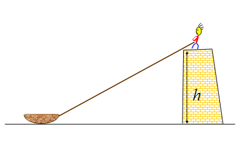
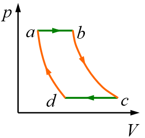

物理1¶
§2 刚体力学¶
转动惯量¶
2021年6月21日。
总质量均记为 \(m\)。
| 物体 | 转动轴 | 转动惯量 |
|---|---|---|
| 长 \(l\) 的细杆 | 过一端点且垂直于杆 | \(\frac13ml^2\) |
| 半径为 \(r\) 的实心圆柱 | 旋转对称轴 | \(\frac12mr^2\) |
| 半径为 \(r\) 的球面 | 旋转对称轴 | \(\frac23mr^2\) |
| 半径为 \(r\) 的实心球 | 旋转对称轴 | \(\frac25 mr^2\) |
§4 气体动理论¶
Boltzmann 常量 \(k_B\)，Avogadro 常量 \(N_A\)，理想气体常量 \(R\)。（\(R = k_BN_A\)）
宏观¶
2021年4月17日。
| 按数量 | 按物质的量 | |
|---|---|---|
| 总量 | 分子总数 \(N\) | 总物质的量 \(\nu\) |
| 密度 | 数密度 \(n\) | \(\frac \nu V\) |
| 压强—温度、密度 | \(p=nk_BT\) | \(p=\frac\nu V R T\) |
| 压强、体积—温度 | \(pV=Nk_B T\) | \(pV=\nu RT\) |
| 每个自由度的能量 | \(\frac12 N k_B T\) | \(\frac12 \nu R T\) |
温度仅包括平动的三个自由度。
\(\overline{v^2} \geq \bar v^2\)¶
2021年4月18日。
另证：设概率密度函数为 \(\operatorname{pdf} v\)，累积分布函数为 \(\operatorname{cdf} v\)，则 \(\frac{\d}{\d v} \operatorname{cdf} v = \operatorname{pdf} v\)。于是
\[ \begin{split} \overline{v^2} &= \int_{\R^+} v^2 \operatorname{pdf}v \d v = \int_{\R^+} v^2 \d(\operatorname{cdf}v) \\ &= \int_{\R^+}\int_{\R^+} v^2 \d(\operatorname{cdf}v) \d(\operatorname{cdf}u) = \int_{\R^+}\int_{\R^+} u^2 \d(\operatorname{cdf}v) \d(\operatorname{cdf}u) \\ &= \int_{\R^+}\int_{\R^+} \frac{u^2+v^2}2 \d(\operatorname{cdf}v) \d(\operatorname{cdf}u) \\ &\geq \int_{\R^+}\int_{\R^+} uv \d(\operatorname{cdf}v) \d(\operatorname{cdf}u) \\ &= \int_{\R^+} u \d(\operatorname{cdf}u) \int_{\R^+} v \d(\operatorname{cdf}v) \\ &= \left( \int_{\R^+} v \d(\operatorname{cdf}v) \right)^2 = \left( \int_{\R^+} v \operatorname{pdf}v \d v \right)^2 \\ &= \bar v^2 \end{split} \]这将加权平均转化成了普通算术平均。
Maxwell 分布的特征速率¶
2021年5月28日。
设 \(u= \sqrt\frac{RT}{M}\) ，则 \(\text{PDF}\propto \exp\left( -\frac{u^2}2 \right)\)。
最概然速率为 \(\sqrt2 u\)， 平均速率为 \(\sqrt{\dfrac 8\pi} u\)，方均根速率为 \(\sqrt3 u\)，平均相对速率为 \(\sqrt{\dfrac{16}\pi} u\)。
§5 热力学基础¶
理想气体的几个准静态过程¶
2021年5月16日。
\(\d V \equiv 0, \dbar W \equiv 0\)¶
\(\d p \equiv 0\)¶
\(\d T \equiv 0, \d U \equiv0\)¶
\(\dbar Q \equiv 0\)¶
状态方程等：
杂项¶
可逆过程¶
2021年6月22日。
- 正过程前后，系统、环境允许有变化；
- 只是相应逆过程能把这些变化都复原。
（书上写得比较乱）
物理光学¶
干涉与衍射¶
2021年6月7日。
干涉、衍射都是惠更斯-菲涅尔原理的推论，只是干涉中子波源有限多，衍射中无限多。在字面上，“干涉”侧重于H-F原理中的“叠加”，“衍射”侧重于“各个方向”。其实两个现象往往是同时发生的：杨氏双缝干涉实验中，若双缝处不发生衍射，则两缝出射光根本不相交，不可能干涉；单缝远场衍射中，若经过单缝不同处的光不发生干涉，则半波带法无从下手，无法形成衍射条纹。在光栅衍射中，这两种现象更是相伴而生了。
慕课的一些题目¶
存在无法访问的链接
“抱歉，课程本学期已结束。老师已将学期的查看权限关闭，你无法再查看本学期的内容。”
拉小船¶
2021年3月4日，第一周单元作业，2。
在堤岸顶上用绳子拉小船。设岸顶离水面的高度\(h\)为20m，收绳子的速率\(u\)为3m/s，且保持不变， 若当船与岸顶的距离\(x\)为40m时开始计时，则5秒时小船速率\(v\)与加速度大小\(a\)各几何？

{kind=link}
解¶
记剩余绳长为\(l\)，绳仰角为\(\theta\)。
易知所求时刻 \(x = \SI{15}{m}, l= \SI{25}{m}, \cos\theta = 0.6, \sin\theta = 0.8\) 。
（就不用向量了，这里它没什么好处。）
初等¶
→“加速度求法”。
画图，建立两组基：一组为水平-竖直参考系，一组为“船沿绳收缩”-“船绕人旋转”参考系。前者易描述船，后者易描述绳。
先用第一组基判断船的速度、加速度方向，然后用第二组基写出绳末端（相当于船）的速度（\(u\)）、法向加速度（\(\dfrac{v^2\sin^2\theta}l\)）。利用各参考系中合速度一致，可得
故 \(v=\SI{5}{m/s}, a = \SI{\frac{16}{15}}{m/s^2}\)
导数¶
由勾股定理，\(x=\sqrt{l^2-h^2}\) 。又 \(\dfrac{\d l}{\d t} = u\)
代入数据计算，再取绝对值即可。
微分¶
对勾股定理 \(l^2 = x^2 + h^2\) 微分，得 \(2l\d l = 2x \d x\)，即 \(\d x = \dfrac lx \d l\)，故
变形为 \(vx=lu\) ，微分得
之后类似导数法。
三角形周长质心¶
2021年3月20日，第三周单元测验。
三角形周长的质心是中点三角形的内心。
证明：对于 \(\triangle ABC\)，设三边 \(a,b,c\) 的中点分别为 \(E,F,G\)，那么
另：
\[ \begin{split} CoM &= \frac{a\frac{B+C}2 + b\frac{C+A}2 + c\frac{A+B}2}{a+b+c} \\ &= \frac{(a+b)C + (b+c)A + (c+a)B}{2(a+b+c)} \\ &= \frac32 \frac{A+B+C}{3} - \frac12 \frac{aA+bB+cC}{a+b+c} \\ &= \frac{3G_{\triangle ABC} - I_{\triangle ABC}}{2} \\ &= G_{\triangle EFG} +\frac{G_{\triangle ABC} - I_{\triangle ABC}}{2} \\ &= I_{\triangle EFG} \\ \end{split} \]
内心的表达式¶
对于 \(\triangle ABC\)，设一点
同理可得，\(I-B,I-C\) 也是另外两角的平分线。
故\(I\)就是 \(\triangle ABC\) 的内心。
伪卡诺循环¶
2021年5月1日，第九周作业。

如图，理想气体经历循环（等压膨胀–绝热膨胀–等压压缩–绝热压缩）。已知\(T_b,T_c\)，求效率\(\eta\)。
仅a→b吸热，仅c→d放热，故 \(1-\eta = \dfrac{Q_{cd}}{Q_{ab}}\)。由于这两个过程都是等压过程，热容相等，故 \(Q\propto \Delta T\)，\(1-\eta = \dfrac{T_b-T_a}{T_c-T_d}\)。
由于b→c，d→a都是绝热过程，均满足
因为 \(p_b=p_a,p_c=p_d\)，所以
所以
注意，这不是卡诺循环，\(T_b,T_c\)也不是工作温度的上下限。
负热容¶
2021年5月3日，讨论10：热容。
理想气体热容一定是正值吗？
理想气体等温过程的热容是什么？
热容是否可以为负值？若可以，在怎样的过程中热容是负值？
0/0，无意义，或者说∞。
可负。Q = ΔU + W = i/2 νRΔT + W，故 c = Q/ΔT = iνR/2 + W/ΔT，W/ΔT 一项其实是任意的。具体地说，理想气体膨胀得比绝热膨胀还夸张时，c就是负的。一楼同学举了例子：热带气旋。
等温膨胀不违反热力学第二定律¶
2021年5月3日，讨论12：热力学第二定律的讨论。
理想气体等温过程内能不变，系统从外界吸收的热量全部转换为有用功，效率为100%。这违反热力学第二定律吗？为什么？
不违反。从功热转换的角度，该过程引起了其他变化（体积增大），不违法“将热全部转化为功，而不引起其他变化”。从永动机的角度，这只是半个循环；若考虑整个循环，则为把气体压缩回原状，外界要对系统做功，一正一负，整个过程的功就变少了，效率达不到一，并非第二类永动机。
注意¶
- 注意向量的方向。
- 弹簧的弹性势能与伸缩量而不是长度有关。
- 区分直径与半径。
- \(\dfrac\omega{\SI{}{rad/s}} = \dfrac{2\pi n}{\SI{}{r/min} \times \SI{60}{s/min}}\)，有个“60”。
- 对于概率密度为\(f\)的速率分布，部分平均值 \(\bar v_D = \frac{\int_D v f\d v}{\int_D f\d v}\)，注意分母与\(D\)有关。
- 分清“改变到多少”与“改变了多少”。
- 区分“过质心轴”的转动惯量和一般轴的转动惯量。
- 求熵变时注意 \(\dbar Q\) 的正负。
- 区分波形图和某点的振动图象，以及速度随时间的图象。
- 记得重力。
- 用等厚干涉观察表面缺陷时，区分空气突出和工件突出。
- 区分真空中的波长与介质中的波长，以及它们与光程的关系。
- 注意内能包括分子转动动能。